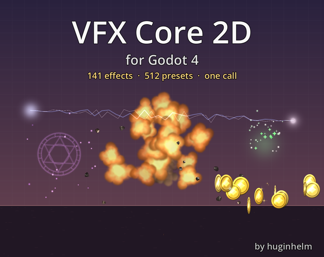
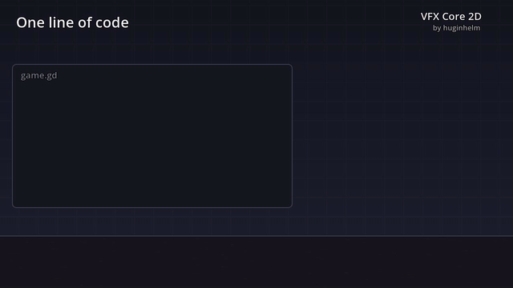
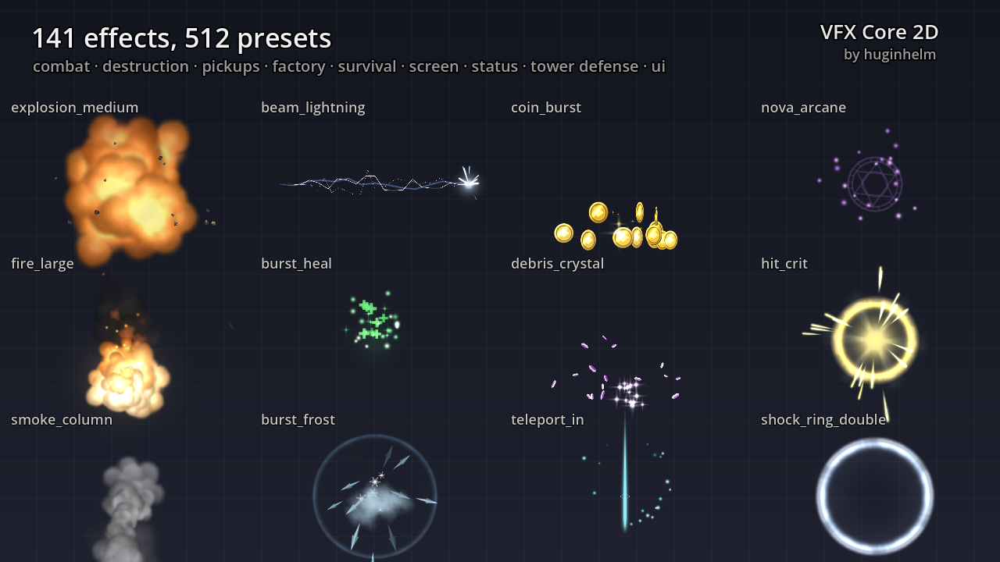
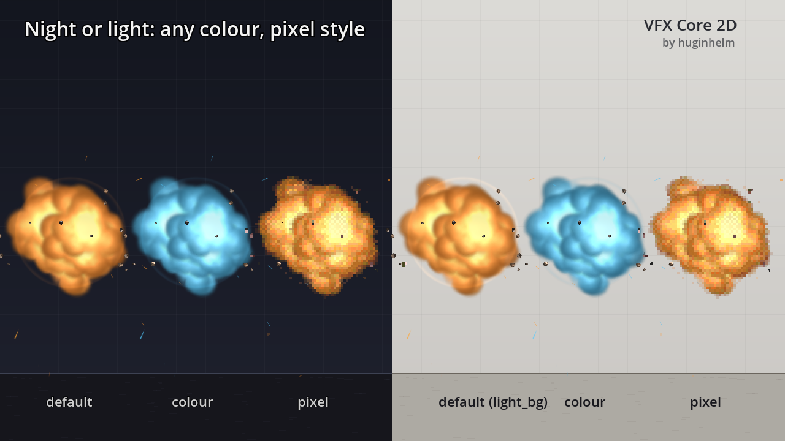
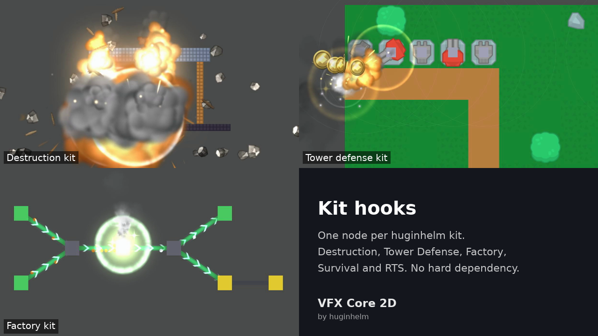
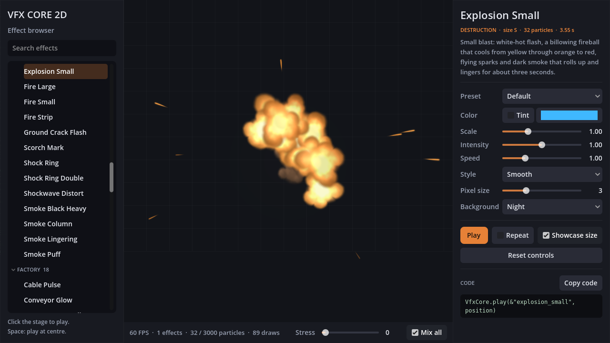
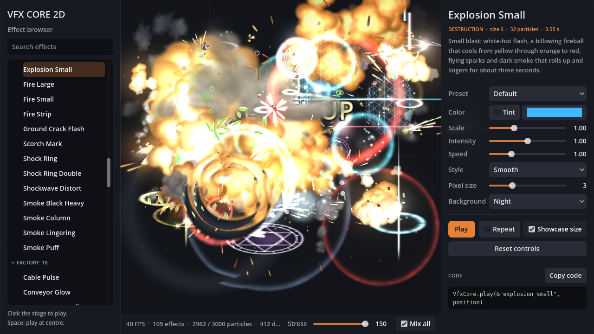
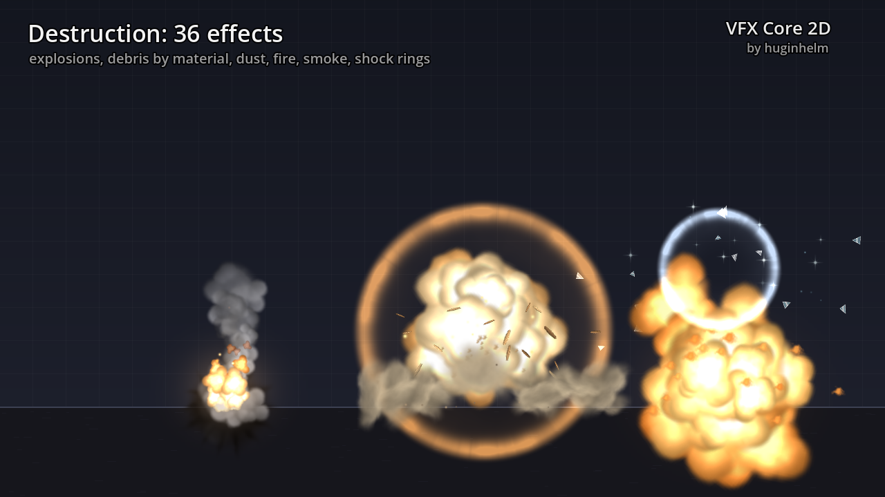

Explosions, hits, beams, pickups and screen juice with one line of code.
VFX Core 2D for Godot 4: 141 procedural 2D effects and 512 presets (explosions, debris, smoke, muzzle flashes, hits, beams, magic, pickups, UI and screen effects), played with one line of GDScript. Pooled, budgeted, HD or pixel style. Free MIT Lite on GitHub (8 effects + hit_flash), Pro on itch.io.

Engine: Godot 4.4+ (tested on 4.4.1, 4.6.3 and 4.7.2) · Renderers: Compatibility, Mobile, Forward+ · Language: typed GDScript · Version 1.0.0
VfxCore.play(&"explosion_small", global_position)
VfxCore.play(&"explosion_small", global_position, {"color": Color.ORANGE, "scale": 1.5})
VfxCore.apply(&"hit_flash", $Sprite2D)
VfxCore.shake(0.4)| Feature | Lite (free, MIT) | Pro (licence) |
|---|---|---|
| One-call API (play, play_attached, play_line, apply), handles, pooling, particle budget | ✅ | ✅ |
| HD or pixel style, colour/scale/intensity/speed per call, camera shake and hit-stop | ✅ | ✅ |
| Demo browser with live controls and a "Copy code" button | ✅ | ✅ |
| Effects | 8 + hit_flash | 141 |
| Presets | 32 | 512 |
| Light-background presets (77 effects) | – | ✅ |
| Kit hooks | Destruction Core | Destruction Core, Tower Defense, Factory, Survival, RTS |
| Tested Godot versions | 4.4.1, 4.7.2 | 4.4.1, 4.6.3, 4.7.2 |
| Licence | MIT | Commercial per-developer licence |
VfxCore.play(&"explosion_medium", pos) returns a handle; one-shots clean up, loops stop with handle.stop()instantiate() once warm) and a global particle budget (3,000 by default) that drops low-priority effects firstCPUParticles2D and own canvas shaders: same look on Compatibility, Mobile and Forward+ and in the web export






All textures are generated by our own code; there are no third-party assets.
Lite is free under the MIT License. Pro is licensed per developer: use it in any number of commercial or non-commercial games; don't resell or redistribute the pack, put it in another asset pack, or upload the Pro files to a public repository.
Code and docs written with AI coding agents. Machine-readable summary: llms.txt.